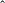

| Up | Next | Prev | PrevTail | Tail |
EXCALC is designed for easy use by all who are familiar with the calculus of Modern Differential Geometry. The program is currently able to handle scalar-valued exterior forms, vectors and operations between them, as well as non-scalar valued forms (indexed forms). It is thus an ideal tool for studying differential equations, doing calculations in general relativity and field theories, or doing simple things such as calculating the Laplacian of a tensor field for an arbitrary given frame.
Author: Eberhard Schrüfer.
This program was developed over several years. I would like to express my deep gratitude to Dr. Anthony Hearn for his continuous interest in this work, and especially for his hospitality and support during a visit in 1984/85 at the RAND Corporation, where substantial progress on this package could be achieved. The Heinrich Hertz-Stiftung supported this visit. Many thanks are also due to Drs. F.W. Hehl, University of Cologne, and J.D. McCrea, University College Dublin, for their suggestions and work on testing this program.
EXCALC is designed for easy use by all who are familiar with the calculus of Modern Differential Geometry. Its syntax is kept as close as possible to standard textbook notations. Therefore, no great experience in writing computer algebra programs is required. It is almost possible to input to the computer the same as what would have been written down for a hand-calculation. For example, the statement
would be recognized by the program as a formula involving exterior products and an inner product. The program is currently able to handle scalar-valued exterior forms, vectors and operations between them, as well as non-scalar valued forms (indexed forms). With this, it should be an ideal tool for studying differential equations, doing calculations in general relativity and field theories, or doing such simple things as calculating the Laplacian of a tensor field for an arbitrary given frame. With the increasing popularity of this calculus, this program should have an application in almost any field of physics and mathematics.
Since the program is completely embedded in REDUCE, all features and facilities of REDUCE are available in a calculation. Even for those who are not quite comfortable in this calculus, there is a good chance of learning it by just playing with the program.
This is the last release of version 2. A much extended differential geometry package (which includes complete symbolic index simplification, tensors, mappings, bundles and others) is under development.
Complaints and comments are appreciated and should be send to the author. If the use of this program leads to a publication, this document should be cited, and a copy of the article to the above address would be welcome.
Geometrical objects like exterior forms or vectors are introduced to the system by declaration commands. The declarations can appear anywhere in a program, but must, of course, be made prior to the use of the object. Everything that has no declaration is treated as a constant; therefore zero-forms must also be declared.
An exterior form is introduced by
PFORM < declaration1 >, < declaration2 >, …;
where
| < declaration > ::= < name > ∣ < list of names >=< number > ∣ < identifier > ∣ |
| < expression > |
| < name > ::= < identifier > ∣ < identifier >(< arguments >) |
For example
declares U to be an exterior form of degree K, V to be a form of degree 4, F to be a form of degree 0 (a function), and W to be a form of degree DIM-1.
If the exterior form should have indices, the declaration would be
The names of the indices are arbitrary.
Exterior forms of the same degree can be grouped into lists to save typing.
The declaration of vectors is similar. The command TVECTOR takes a list of names.
TVECTOR < name1 >, < name2 >, …;
For example, to declare X as a vector and COMM as a vector with two indices, one would say
If a declaration of an already existing name is made, the old declaration is removed, and the new one is taken.
The exterior degree of a symbol or a general expression can be obtained with the function
EXDEGREE < expression >;
Example:
Exterior multiplication between exterior forms is carried out with the nary infix operator
 (wedge). Factors are ordered according to the usual ordering in REDUCE using the
commutation rule for exterior products.
(wedge). Factors are ordered according to the usual ordering in REDUCE using the
commutation rule for exterior products.
It is possible to declare the dimension of the underlying space by
SPACEDIM < number > ∣ < identifier >;
If an exterior product has a degree higher than the dimension of the space, it is replaced by 0:
Partial differentiation is denoted by the operator @. Its capability is the same as the REDUCE DF operator.
An identifier can be declared to be a function of certain variables. This is done with the command FDOMAIN. The following would tell the partial differentiation operator that F is a function of the variables X and Y and that H is a function of X.
Applying @ to F and H would result in
The partial derivative symbol can also be an operator with a single argument. It then represents a natural base element of a tangent vector.
Exterior differentiation of exterior forms is carried out by the operator d. Products are normally differentiated out, i.e.
This expansion can be suppressed by the command NOXPND D.
To obtain a canonical form for an exterior product when the expansion is switched off, the operator D is shifted to the right if it appears in the leftmost place.
Expansion is performed again when the command XPND D is executed.
Functions which are implicitly defined by the FDOMAIN command are expanded into partial derivatives:
If an argument of an implicitly defined function has further dependencies the chain rule will be applied e.g.
Expansion into partial derivatives can be inhibited by NOXPND @ and enabled again by XPND @.
The operator is of course aware of the rules that a repeated application always leads to zero and that there is no exterior form of higher degree than the dimension of the space.
The inner product between a vector and an exterior form is represented by the diphthong _| (underscore or-bar), which is the notation of many textbooks. If the exterior form is an exterior product, the inner product is carried through any factor.
In repeated applications of the inner product to the same exterior form the vector arguments are ordered e.g.
The duality of natural base elements is also known by the system, i.e.
The Lie derivative can be taken between a vector and an exterior form or between two vectors. It is represented by the infix operator |_ . In the case of Lie differentiating, an exterior form by a vector, the Lie derivative is expressed through inner products and exterior differentiations, i.e.
If the arguments of the Lie derivative are vectors, the vectors are ordered using the anticommutivity property, and functions (zero forms) are differentiated out.
The Hodge-* duality operator maps an exterior form of degree K to an exterior form of degree N-K, where N is the dimension of the space. The double application of the operator must lead back to the original exterior form up to a factor. The following example shows how the factor is chosen here
The indeterminate SGN in the above example denotes the sign of the determinant of the metric. It can be assigned a value or will be automatically set if more of the metric structure is specified (via COFRAME), i.e. it is then set to g∕|g|, where g is the determinant of the metric. If the Hodge-* operator appears in an exterior product of maximal degree as the leftmost factor, the Hodge-* is shifted to the right according to
More simplifications are performed if a coframe is defined.
The function VARDF returns as its value the variation of a given Lagrangian n-form with respect to a specified exterior form (a field of the Lagrangian). In the shared variable BNDEQ!*, the expression is stored that has to yield zero if integrated over the boundary.
Syntax:
VARDF(< Lagrangian n-form >,< exterior form >)
Restrictions:
In the current implementation, the Lagrangian must be built up by the fields and the operations d, #, and @. Variation with respect to indexed quantities is currently not allowed.
For the calculation of the conserved currents induced by symmetry operators (vector fields), the function NOETHER is provided. It has the syntax:
NOETHER(< Lagrangian n-form >,< field >,< symmetry generator >)
The above expression would be the canonical energy momentum 3-forms of the Maxwell field, if X is interpreted as a translation;
Exterior forms and vectors may have indices. On input, the indices are given as arguments of the object. A positive argument denotes a superscript and a negative argument a subscript. On output, the indexed quantity is displayed two dimensionally if NAT is on. Indices may be identifiers or numbers.
In the current release, full simplification is performed only if an index range is specified. It is hoped that this restriction can be removed soon. If the index range (the values that the indices can obtain) is specified, the given expression is evaluated for all possible index values, and the summation convention is understood.
If the expression to be evaluated is not an assignment, the values of the expression are displayed as an assignment to an indexed variable with name NS. This is done only on output, i.e. no actual binding to the variable NS occurs.
It should be noted, however, that the index positions on the variable NS can sometimes not be uniquely determined by the system (because of possible reorderings in the expression). Generally it is advisable to use assignments to display complicated expressions.
A range can also be assigned to individual index-names. For example, the declaration
would assign to the index identifiers k,l the range values x,y,z and to the index identifiers u,v,w the range values 1,2. The use of an index identifier not listed in previous indexrange statements has the range of the union of all given index ranges.
With the above example of an indexrange statement, the following index evaluations would take place
In certain cases, one would like to inhibit the summation over specified index names, or at all. For this the command
NOSUM < indexname1 >, …;
and the switch NOSUM are available. The command NOSUM has the effect that summation is not performed over those indices which had been listed. The command RENOSUM enables summation again. The switch NOSUM, if on, inhibits any summation.
It is possible to declare symmetry properties for an indexed quantity by the command INDEX_SYMMETRIES. A prototypical example is as follows
It declares the object u symmetric in the first two and last two indices and antisymmetric with respect to commutation of the given index pairs. If an object is completely symmetric or antisymmetric, the indices need not to be given after the corresponding keyword as shown above for g and h.
If applicable, this command should be issued, since great savings in memory and execution time result. Only strict components are printed.
The commands symmetric and antisymmetric of earlier releases have no effect.
A metric structure is defined in EXCALC by specifying a set of basis one-forms (the coframe) together with the metric.
Syntax:
| COFRAME | < identifier >< (index1) >=< expression1 >, |
| < identifier >< (index2) >=< expression2 >, |
| . |
| . |
| . |
| < identifier >< (indexn) >=< expressionn > |
| WITH METRIC < name >=< expression >; |
This statement automatically sets the dimension of the space and the index range. The clause WITH METRIC can be omitted if the metric is Euclidean and the shorthand WITH SIGNATURE < diagonal elements > can be used in the case of a pseudo-Euclidean metric. The splitting of a metric structure in its metric tensor coefficients and basis one-forms is completely arbitrary including the extremes of an orthonormal frame and a coordinate frame.
Individual elements of the metric can be accessed just by calling them with the desired indices. The value of the determinant of the covariant metric is stored in the variable DETM!*. The metric is not needed for lowering or raising of indices as the system performs this automatically, i.e. no matter in what index position values were assigned to an indexed quantity, the values can be retrieved for any index position just by writing the indexed quantity with the desired indices.
Any expression containing differentials of the coordinate functions will be transformed into an expression of the basis one-forms.The system also knows how to take the exterior derivative of the basis one-forms.
Example 21(Spherical coordinates)
The frame dual to the frame defined by the COFRAME command can be introduced by FRAME command.
FRAME < identifier >;
This command causes the dual property to be recognized, and the tangent vectors of the coordinate functions are replaced by the frame basis vectors.
As a convenience, the frames can be displayed at any point in a program by the command DISPLAYFRAME;.
The Hodge-* duality operator returns the explicitly constructed dual element if applied to coframe base elements. The metric is properly taken into account.
The total antisymmetric Levi-Cevita tensor EPS is also available. The value of EPS with an even permutation of the indices in a covariant position is taken to be +1.
The command RIEMANNCONX is provided for calculating the connection 1 forms. The values are stored on the name given to RIEMANNCONX. This command is far more efficient than calculating the connection from the differential of the basis one-forms and using inner products.
Example 23(Calculate the connection 1-form and curvature 2-form on S(2))
The ordering of an exterior form or vector can be changed by the command FORDER. In an expression, the first identifier or kernel in the arguments of FORDER is ordered ahead of the second, and so on, and ordered ahead of all not appearing as arguments. This ordering is done on the internal level and not only on output. The execution of this statement can therefore have tremendous effects on computation time and memory requirements. REMFORDER brings back standard ordering for those elements that are listed as arguments.
An expression can be put in a more structured form by renaming a subexpression. This is done with the command KEEP which has the syntax
KEEP < name1 >=< expression1 >,< name2 >=< expression2 >, …
The effect is that rules are set up for simplifying < name > without introducing its definition in an expression. In an expression the system also tries by reordering to generate as many instances of < name > as possible.
The capabilities of KEEP are currently very limited. Only exterior products should occur as righthand sides in KEEP.
Table 16.1 summarizes EXCALC commands and the page number they are defined on.
|  | Exterior Multiplication | 1340 |
| @ | Partial Differentiation | 1342 |
| @ | Tangent Vector | 1345 |
| # | Hodge-* Operator | 1357 |
| _| | Inner Product | 1352 |
| |_ | Lie Derivative | 1355 |
| COFRAME | Declaration of a coframe | 1367 |
| d | Exterior differentiation | 1346 |
| DISPLAYFRAME | Displays the frame | 1372 |
| EPS | Levi-Civita tensor | 1373 |
| EXDEGREE | Calculates the exterior degree of an expression | 1339 |
| FDOMAIN | Declaration of implicit dependencies | 1343 |
| FORDER | Ordering command | 1375 |
| FRAME | Declares the frame dual to the coframe | 1371 |
| INDEXRANGE | Declaration of indices | 1362 |
| INDEX_SYMMETRIES | Declares arbitrary index symmetry properties | 1366 |
| KEEP | Structuring command | 1375 |
| METRIC | Clause of COFRAME to specify a metric | 1367 |
| NOETHER | Calculates the Noether current | 1360 |
| NOSUM | Inhibits summation convention | 1366 |
| NOXPND d | Inhibits the use of product rule for d | 1347 |
| NOXPND @ | Inhibits expansion into partial derivatives | 1351 |
| PFORM | Declaration of exterior forms | 1334 |
| REMFORDER | Clears ordering | 1375 |
| RENOSUM | Enables summation convention | 1366 |
| RIEMANNCONX | Calculation of a Riemannian Connection | 1373 |
| SIGNATURE | Clause of COFRAME to specify a pseudo- | 1368 |
| Euclidean metric | ||
| SPACEDIM | Command to set the dimension of a space | 1341 |
| TVECTOR | Declaration of vectors | 1338 |
| VARDF | Variational derivative | 1359 |
| XPND d | Enables the use of product rule for d | 1349 |
| (default) | ||
| XPND @ | Enables expansion into partial derivatives | 1351 |
| (default) |
The following examples should illustrate the use of EXCALC. It is not intended to show the most efficient or most elegant way of stating the problems; rather the variety of syntactic constructs are exemplified. The examples are on a test file distributed with EXCALC.
| Up | Next | Prev | PrevTail | Front |